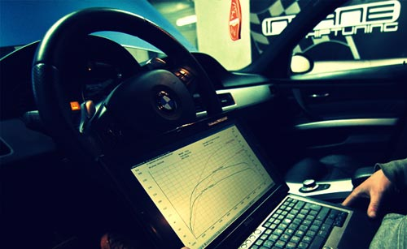
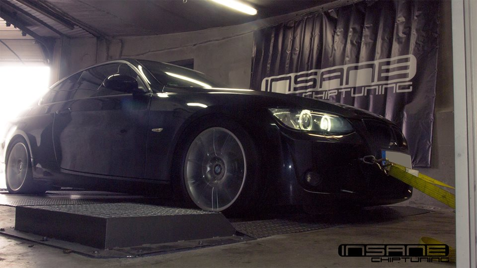
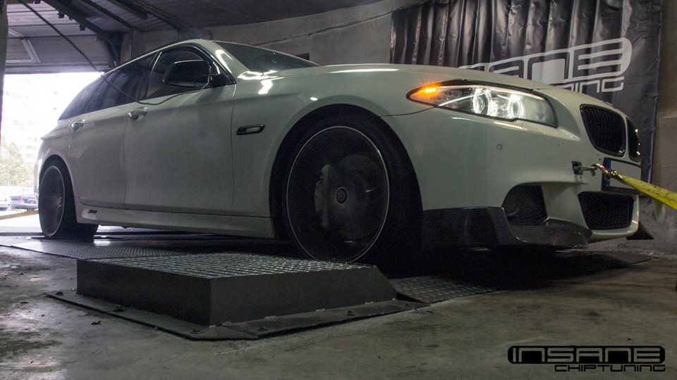
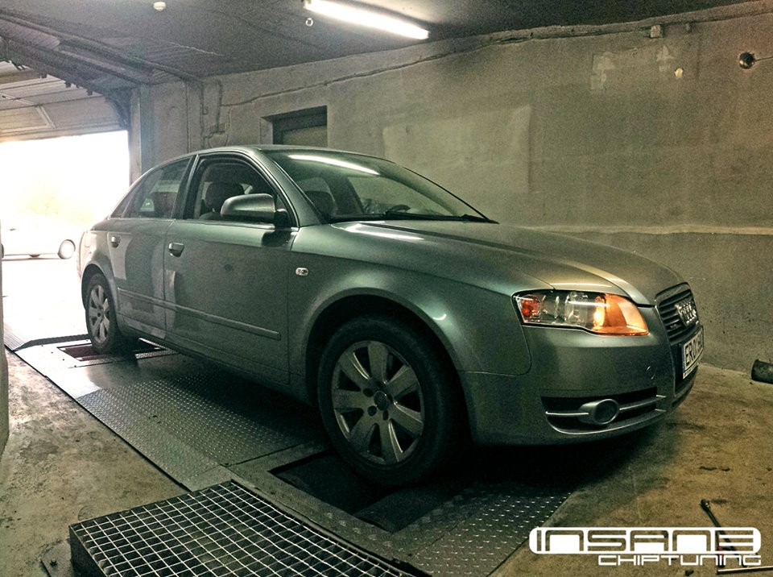
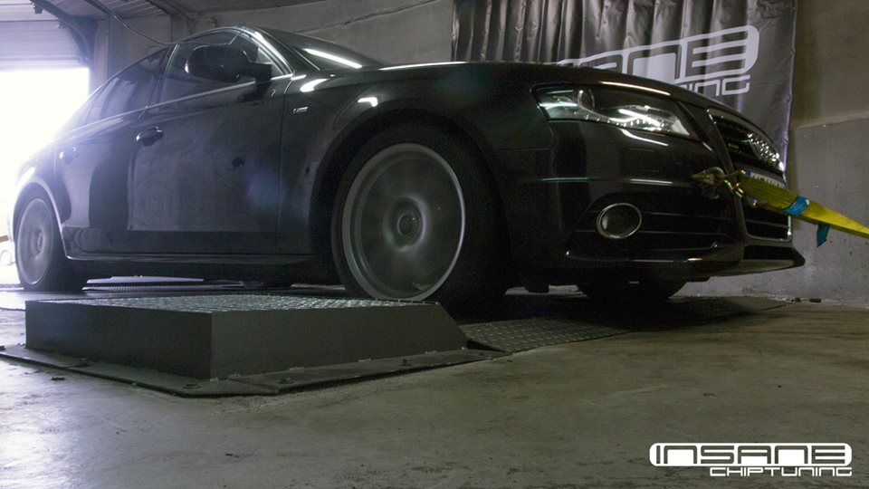
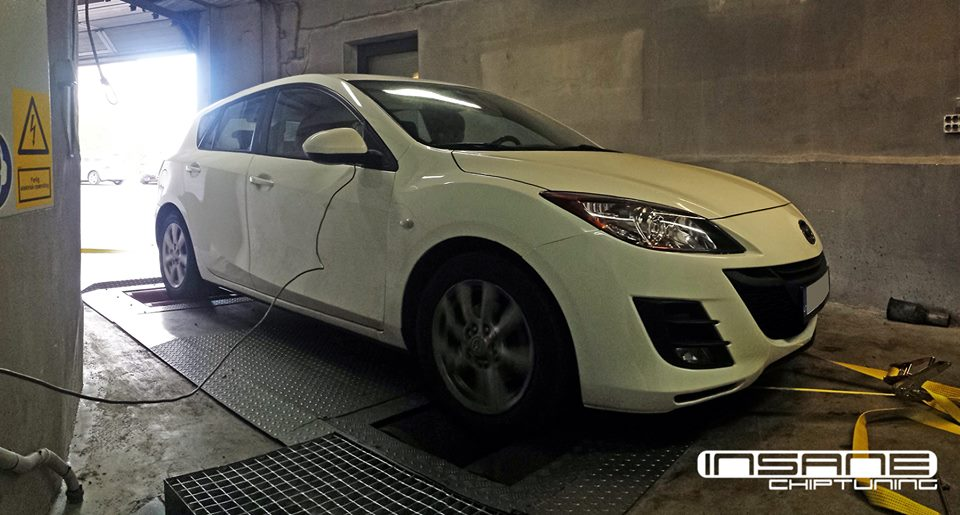

GALIOS DIDINIMAS CHIP TUNING
NAUJIENA ! Nuo šiol galime pasiulyti ne tik galios didinimą, bet ir tuo pačiu išmatuoti automobilio galingumą . Tai yra tam, kad darbų rezultatai būtų aiškūs, o ne paimti iš kažkur, kur eilinis žmogus gali ir nesuprasti.Kai tik buvo pradėti gaminti automobiliai su elektroninėmis kuro įpurškimo sistemomis, atsirado galimybė tobulinti jų darbą.
Galios didinimas – geriau žinomas, kaip Chip tuning, tai dviejų žodžių derinys, atspindintis darbo esmę. Chip – tai mikroschema, kurioje yra Jūsų automobilio variklio valdymo programa, tuning – modifikuoti, reguliuoti, derinti. Chip tuningas atliekamas ir senesniems automobiliams, tik tenka išlituoti mikroschemą, kurioje yra visa variklio valdymo programa. Taip yra todėl, jog mikroschemos yra vienkartinio įrašymo, ir tenka vietoj jų statyti naujas, jau atitinkamai suprogramuotas mikroschemas pagal poreikius. Nepaisant to, čia yra praeitis, šiuolaikiniai automobiliai turi galimybę būti programuojami jų neišiminėjant ar neardant. Norint taip dirbti, neišvengiamai reikia naudoti geriausią įranga, kurią gali pasiūlyti Chip tuning’o įrangos gamintojas. Dirbame tik su geriausiai tarp pasaulio programuotojų vertinamais Chip tuning’o įrangos gamintojais.Atliekant Chip tuning’ą, automobiliui reikia išanalizuoti automobilio variklio darbo parametrus – ar jie atitinka gamyklinius, gamintojo nurodytus parametrus. Tai nustatoma diagnostikos pagalba, stebint aktyvius variklio darbo parametrus. Jeigu automobilis nėra tvarkingas, matome parametrų neatitikimus, apie tai informuojame savininką ir patariame, kaip juos spręsti. Yra tokių gedimų, kuriuos galime išspręsti vietoje. Taigi, jeigu automobilis tvarkingas, yra nuskaitoma esama, dažniausiai standartinė variklio valdymo programa. Su klientu aptariami norimi rezultatai ir esamos technikos galimybės. Toliau yra dirbama su turima variklio valdymo programa. Joje atliekamos modifikacijos, kurios patobulina gamintojo išleistą automobilį. Automobilis tampa taupesnis, važiuojant pastoviais greičiais – kruiziniu rėžimu automobilis tampa staigesnis, po atliktų modifikacijų sukimo momentą galima išnaudoti momentaliai ir staigiai. Esant tokiems variklio sūkiams, kur prieš Chip tuning automobilis dar snaudė ir laukė, lenkimo manevras tampa kur kas saugesnis. Automobilio dinamiškumas pasikeičia visame sūkių diapazone, jeigu palygintume galios kreives (jos gaunamos automobilį testuojant ant Dyno stendo) jos skiriasi tuo, jog anksčiau kilti pradeda dėl didesnio sukimo momento ir galingumas didesnis išsilaiko didesniuose sūkiuose. Po atliktų programavimo darbų belieka įrašyti naują variklio valdymo programą atgal į variklio valdymo bloką. Kaip ir prieš Chip tuning’ą, taip ir po perprogramavimo stebimi nauji aktyvūs variklio parametrai, stebima, ar jie atitinka programiškai nustatytus norimus naujus variklio parametrus.
Yra keli variklių tipai, kur galios didinimo rezultatai skiriasi: turbo dyzeliniai automobiliai, turbo benzininiai automobiliai ir atmosferiniai benziniiai varkliai (be turbinos). Benzininiams varikliams be turbinos galios prieaugis yra mažiausias – iki 10%, dėl to daugeliu atvejų tiesiog yra beprasmiška dėl kelių arklių kažką daryti.. Išskyrus tuos atvejus, kai variklis yra pakankamai litringas arba automobilis ruošiamas sportui ir jo resursų negailima.
Dyzelinių automobilių čipavimas
Turbo dyzeliniams automobiliams Chip tuning’o pagalba dažniausiai galima padidinti galingumą ~30%. Be abejo, yra galimybė pasiekti ir didesnį galios padidėjimą. Tokiais atvejais reikia neišvengiamai atlikti tam tikras modifikacijas po kapoto dangčiu, pvz., našesnės turbinos, laisvesnis įsiurbimo/išmetimo vamzdynas, pralaidesnė kuro sistema (purkštukai, plūdžeris), modifikuotas galvos velenelis ir t.t. Chip tuning’o pagalba pasiekiami rezultatai niekaip neprilygsta liaudyje gerai žinomam primityviajam “Tuning box’ui”. “Tuning box’as” veikia labai paprastu veikimo principu: galia išgaunama varžos pagalba, didindama vien kuro kiekį, kas stipriai apkrauna kuro siurblį ir taip mažina jo tarnavimo laiką. Po Chip tuning darbų keičiasi ne vienas parametras.. Kuro kiekis, kuro slėgis, oro slėgis, degimo kampas, purkštukų atsidarymo laikas, nukeliami galią ar sukimo momentą ribojantys ribotuvai į atitinkamas naujai užduotas reikšmes.Viską įvertinus matome, kokį galios didinimo būdą reikėtų pasirinkti, bei kokia bus chip tuning kaina. Prieš ir po darbų yra visada vertinama suodžių sistemos DPF / FAP būklė. Chip tiuningą atliekame Vilniuje, tačiau atskiru susitarimu, galime atvykti ir į vietą (pvž. kai chip tiuningas atliekamas sunkvežimiams).
Benzinių automobilių čipavimas
Turbo benzininiams varikliams viskas išlieka taip pačiai kaip ir turbo dyzeliniams, viskas priklauso nuo tai, ko nori klientas, ir kiek daug jis pasiryžęs už tai mokėti. Šio tipo varikliams galios didinimas yra brangesnis, nes tenka tobulinti programą kelis kartus, kol pasiekiamas norimas rezultatas ir išlaikomas resursų saugumas.Stengdamiesi turėti geriausius rezultatus, stengiamės nuolat palaikyti ryšius su įrangos gamintojais ir su kitų Europos šalių programuotojais. Dėl to negalime pasiūlyti itin mažų kainų. Kokybiškas darbas turi savo vertę, bet kartu turi būti ir prieinamas žmonėms. Tenka nemažai susidurti su nekokybišku Chip tuning. Tokiais atvejais žmonėms patartina sužinoti, kur ketina pristatyti savo automobilį, ir kokių pasekmių dėl to gali tikėtis. Tiesiog nesinori girdėti blogų atsiliepimų apie Chip tuning’ą ir taip gadinančių jo reputaciją. Chip tuning’o pagalba pasiekiami rezultatai niekaip neprilygsta liaudyje gerai žinomam primityviajam “Tuning box’ui”. “Tuning box’as” veikia dažnai labai paprastu veikimo principu: galia išgaunama varžos pagalba, didindama dažniausiai keli ar vos viena parametras pagaulingu būdu, taip apkraunant agregatus ar net juos gadinant. Po Chip tuning darbų keičiasi ne vienas parametras.. Kuro kiekis, kuro slėgis, oro slėgis, degimo kampas, purkštukų atsidarymo laikas, nukeliami galią ar sukimo momentą ribojantys ribotuvai į atitinkamas naujai užduotas reikšmes, derinmos oru/kuro reiksmės. Viską įvertinus matome, kokį galios didinimo būdą reikėtų pasirinkti, bei kokia bus chip tuning kaina






Turite klausimų? Parašykite!
"1nsane chip tuning" atilikti darbai:

Mercedes-Benz S550 Cabriolet STAGE1
Galia padidinta su Insane Performance stage1 programa. Standartinis Galingumas 440AG ir 616NM Pakelta iki 512AG ir 805NM

AUDI S6 4.0TFSI STAGE1
Galia padidinta su Insane chiptuning stage 1 programa. Standartinis galingumas 416HP ir 580NM Saugiai Pakelta iki 510HP ir 786NM

MERCEDES CLS 550 299kW STAGE1
Galia padidinta su Insane chiptuning stage1 programa. Pakelta iki 377kW 775Nm.

Mini One 1.2T STAGE1
Galia padidinta su Insane chiptuning stage1 programa. Standartinis galingumas 92Hp ir 165nM Pakelta iki 120Hp ir 217nM

AUDI TTS STAGE1
Galia padidinta su Insane chiptuning stage 1 programa. Standartinis galingumas 285HP ir 392NM Saugiai Pakelta iki 352HP ir 489NM